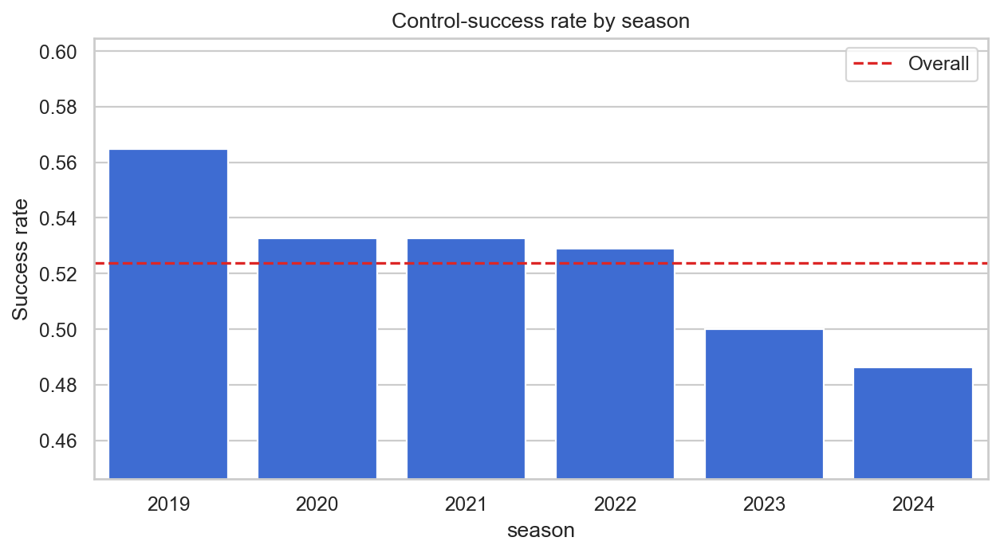
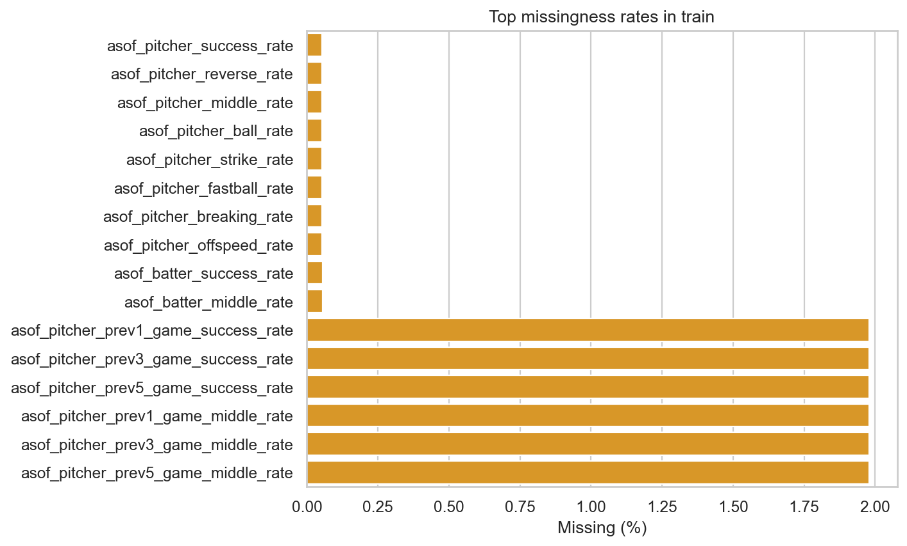
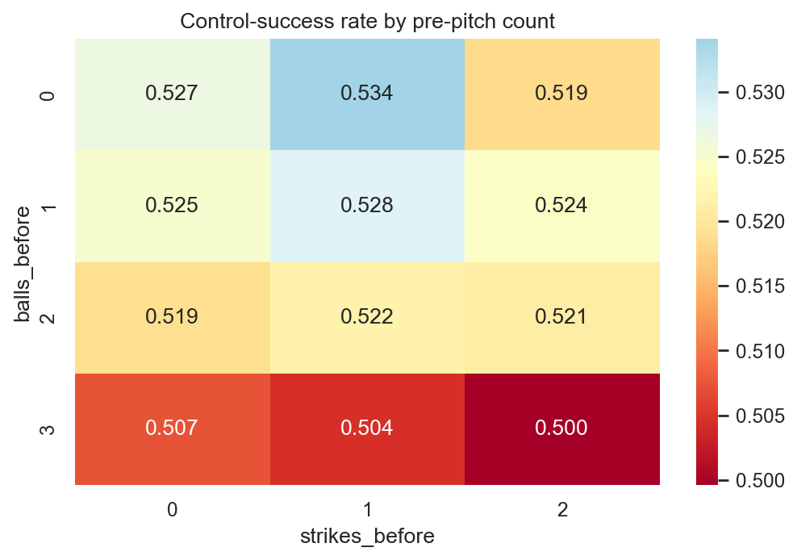
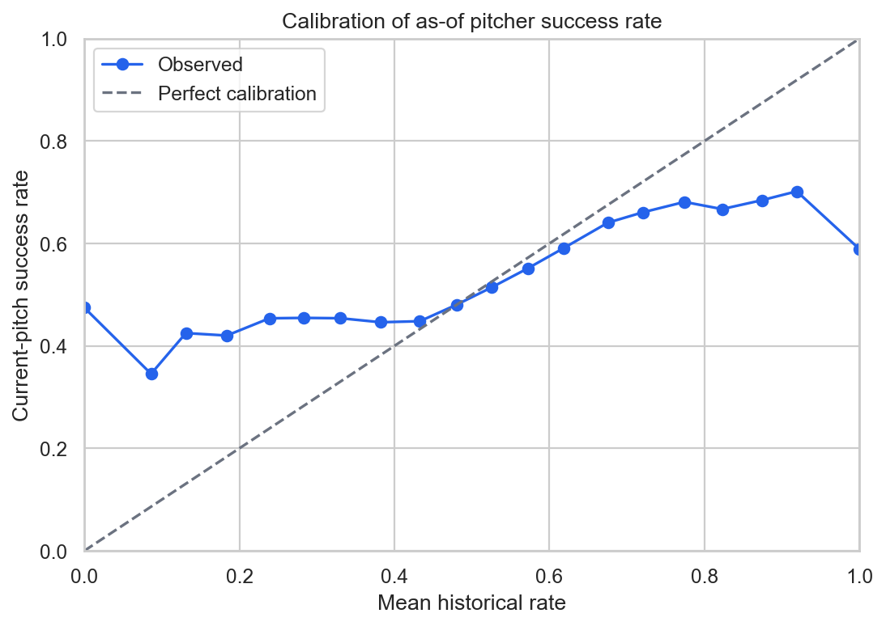
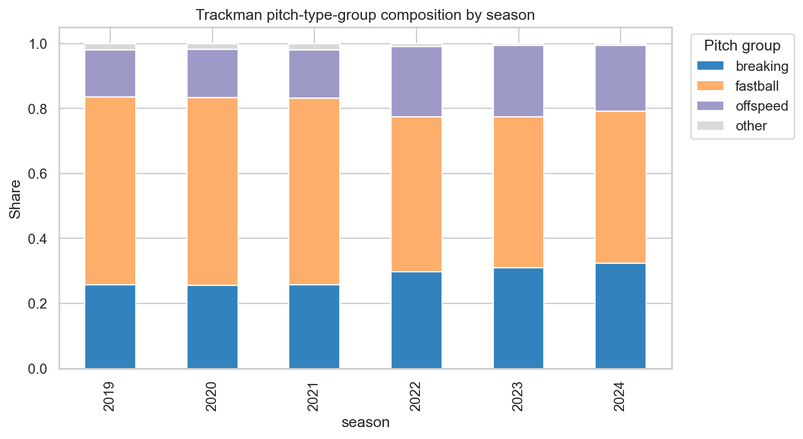
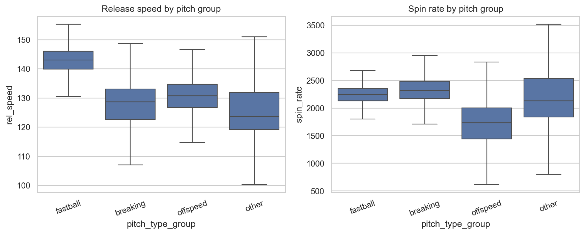

분석 기준일: 2026-08-05
분석 대상: train.csv, 형식 확인용 test.csv, sample_submission.csv, trackman_history.csv
이번 문제는 기존 CSW 예측 문제와 타깃 의미가 다르다. control_success는 현재 투구의 위치와 포수 요구 방향을 기준으로 산출된 제구 성공 여부이며, CSW처럼 현재 투구 결과를 뜻하지 않는다. 기존 CSW용 타깃 정의, 파생 변수 해석, 학습된 모델은 그대로 재사용하면 안 된다. 기존 파일은 건드리지 않았고, 본 EDA는 별도 폴더에서 새 타깃을 기준으로 수행했다.
가장 중요한 발견은 다음과 같다.
game_type과 시즌의 상호작용이 매우 강하다. F의 성공률은 2022년 **70.8749%**에서 2023년 **47.2904%**로 급락했다. 코드 의미는 설명서에 공개되지 않았으므로 임의로 해석하지 않되, 모델과 검증에서 반드시 분리 확인해야 한다.row_id는 사실상 시간 순서다. 더 심각하게는 같은 투수의 다음 학습 행에 있는 누적 성공률로 현재 타깃을 반올림 복원하면 99.9463% 행에서 100% 정확히 복원된다. 이는 데이터 구조 진단일 뿐이며, 테스트의 다른 행을 사용할 수 없으므로 절대 피처로 만들면 안 된다.asof_pitcher_success_rate는 단변량 AUC 0.5488로 가장 유용한 단일 수치 피처지만, 극단값이 과도하게 확신적이고 최근 시즌에서 낙관 편향이 있다. 2024년 평균 과거 성공률은 실제보다 2.53%p 높다. 표본 수 기반 smoothing과 시즌별 재보정이 필요하다.
| 파일 | 행 × 열 | 기간 | 핵심 용도 |
|---|---|---|---|
train.csv |
1,475,092 × 49 | 2019~2024 | 48개 입력 + control_success |
test.csv |
5 × 48 | 2025 | 실제 평가 데이터가 아닌 형식 확인 샘플 |
sample_submission.csv |
5 × 2 | 2025 | 제출 형식 확인 샘플 |
trackman_history.csv |
1,793,078 × 30 | 2019~2024 | 과거 Trackman 보조 로그 |
학습 입력 48개와 테스트 48개 컬럼은 이름과 순서가 정확히 일치한다. 샘플 제출의 row_id 순서도 형식 확인용 테스트와 일치한다. 다만 테스트는 5행뿐이므로 결측률, 선수 커버리지, 범주 출현률, 분포 이동을 판단하는 용도로 사용하면 안 된다.
메인 입력은 다음과 같이 구성된다.
asof_* 19개성공은 772,603건, 실패는 702,489건이다. 전체 성공률은 52.3766%이므로 별도의 강한 class weight는 우선순위가 낮다.
| 시즌 | 행 수 | 성공률 | 전체 대비 |
|---|---|---|---|
| 2019 | 237,413 | 56.4670% | +4.09%p |
| 2020 | 244,087 | 53.2712% | +0.89%p |
| 2021 | 247,088 | 53.2762% | +0.90%p |
| 2022 | 247,472 | 52.8920% | +0.52%p |
| 2023 | 245,525 | 49.9957% | -2.38%p |
| 2024 | 253,507 | 48.6105% | -3.77%p |
game_type 체제 변화| 시즌 | F 표본 | F 성공률 | R 표본 | R 성공률 |
|---|---|---|---|---|
| 2019 | 25,786 | 68.9250% | 211,627 | 54.9490% |
| 2020 | 23,213 | 58.7774% | 220,874 | 52.6925% |
| 2021 | 25,861 | 70.3840% | 221,227 | 51.2763% |
| 2022 | 30,448 | 70.8749% | 217,024 | 50.3691% |
| 2023 | 25,686 | 47.2904% | 219,839 | 50.3118% |
| 2024 | 30,010 | 45.9280% | 223,497 | 48.9707% |
2022→2023의 전체 하락은 F에서 특히 극단적이다. R도 2019 이후 하락하므로 변화가 F에만 국한되지는 않는다. 모델이 시즌과 game_type을 독립적인 범주로만 처리하면 이 비선형 변화를 놓칠 수 있다. season × game_type 상호작용과 유형별 보정 결과를 반드시 확인해야 한다.
양 시즌 모두 100구 이상인 동일 투수만 비교해도 다음 변화가 나타난다.
| 구간 | 비교 투수 | 중앙값 변화 | 현 시즌 투구 수 가중 변화 | 하락 투수 비율 |
|---|---|---|---|---|
| 2019→2020 | 180 | -3.54%p | -3.65%p | 81.7% |
| 2020→2021 | 206 | -0.02%p | 0.00%p | 50.0% |
| 2021→2022 | 193 | -0.15%p | -1.03%p | 54.4% |
| 2022→2023 | 202 | -2.67%p | -2.61%p | 75.2% |
| 2023→2024 | 196 | -0.76%p | -1.00%p | 58.7% |
따라서 시즌 변화는 신규 선수 유입만의 문제가 아니다. 라벨링 환경, 경기 유형 구성, 선수의 실제 제구 변화가 함께 반영된 것으로 봐야 한다.
메인 데이터에서 다음 항목은 모두 정상이다.
row_id 결측·중복 0건, TRAIN_<숫자> 형식 준수num_runners_on 불일치 0건base_state 불일치 0건asof_*_rate가 0~1 범위승률 기대값 합은 58,607행에서 정확히 100이 아니지만, 차이는 전부 ±0.1이며 한 자리 소수 반올림으로 설명된다. 오류로 처리할 필요가 없다.
다음 피처는 결정론적으로 중복된다.
| 피처 | 다른 피처로부터의 계산 |
|---|---|
run_total_before |
run_top_before + run_bot_before |
score_diff_home |
run_bot_before - run_top_before |
score_diff_pitcher_team |
score_diff_home과 top_bottom |
num_runners_on |
1·2·3루 주자 플래그 합 |
base_state |
주자 플래그 조합 |
away_win_expectancy |
대략 100 - home_win_expectancy |
asof_pitcher_pitchmix_n |
asof_pitcher_n과 전 행에서 동일 |
트리 모델은 중복을 어느 정도 감당하지만, 중요도 분산과 불필요한 복잡도를 줄이려면 대표 변수만 유지하는 ablation이 필요하다. 선형 모델에서는 다중공선성 때문에 더 적극적으로 정리해야 한다.
row_id와 미래 행 누수 위험row_id 숫자 부분은 1부터 순증하고 시즌도 함께 단조 증가한다. 행 순서와 시즌 순위 상관은 0.9860이다. 또한 각 투수의 asof_pitcher_n은 해당 투수의 학습 데이터 누적 행 번호와 100% 일치한다.
같은 투수의 다음 학습 행에서
다음 누적 성공 수 - 현재 누적 성공 수
를 계산하고 반올림하면, 다음 행이 존재하는 **99.9463%**의 행에서 현재 control_success를 100% 복원할 수 있다. 제공률이 소수 6자리로 반올림되어 있어 복원값의 최대 반올림 오차는 0.0146이다.
이것은 현재 행의 입력 자체에 타깃이 들어 있다는 뜻은 아니다. 다음 행은 현재 투구 이후 정보이므로 다음과 같은 작업은 금지해야 한다.
row_id를 시간 대용 피처로 사용row_id는 제출 매칭에만 사용하고 모델 입력에서는 제외하는 것이 안전하다. 검증도 무작위 분할이 아니라 과거 시즌→미래 시즌 순방향으로 해야 한다.
메인 데이터의 결측은 전부 asof_*에 집중되어 있다.
| 결측 묶음 | 결측 행 | 비율 | 결측 시 성공률 | 존재 시 성공률 |
|---|---|---|---|---|
| 투수 누적률·구종 비율 | 792 | 0.0537% | 55.18% | 52.38% |
| 타자 누적률 | 830 | 0.0563% | 60.24% | 52.37% |
| 직전 1·3·5경기 6개 피처 | 29,185 | 1.9785% | 55.08% | 52.32% |
투수 누적률 결측 792건은 투수 고유 수 792명과 같고, 타자 누적률 결측 830건은 타자 고유 수 830명과 같다. 즉 각 선수의 첫 관측과 정확히 대응하는 cold start 구조다. 단순 평균 대체만 하지 말고 다음을 함께 사용해야 한다.
is_pitcher_cold_start, is_batter_cold_start, is_prev_game_history_missinglog1p 변환
연속 시즌 투수 유지율은 67.6~76.1%이고, 현 시즌 신규 투수 비율은 24.3~33.1%다. 선수 ID를 강하게 외우는 모델은 새 시즌에서 성능이 쉽게 무너진다. ID 피처를 쓰더라도 smoothing, 빈도 제한, out-of-fold encoding 또는 범주형 모델의 정규화가 필요하다.
주요 10개 팀은 각 13만~21만 행으로 충분하지만, 팀 22·23·25는 각각 676, 4,437, 292행뿐이다. 이 희소 팀들의 성공률은 42.47~69.23%여서 원시 target encoding은 매우 위험하다.
아래 차이는 모두 단순 집계이며 시즌·game_type·선수 구성의 교란을 포함한다. 인과 효과로 해석하면 안 된다.

| 투수-타자 코드 | 행 수 | 성공률 |
|---|---|---|
| 1v1 | 170,292 | 49.09% |
| 1v2 | 211,059 | 53.75% |
| 2v1 | 525,455 | 53.07% |
| 2v2 | 568,286 | 52.21% |
최대 차이는 4.66%p다. 개별 pitcher_hand, batter_hand보다 조합 피처가 더 유용하다.
asof_* 신호와 보정30만 행 고정 표본에서 단변량 AUC가 높은 피처는 다음과 같다.
| 피처 | AUC | 방향 |
|---|---|---|
asof_pitcher_success_rate |
0.5487 | 높을수록 성공 증가 |
asof_pitcher_prev5_game_success_rate |
0.5457 | 높을수록 성공 증가 |
asof_pitcher_reverse_rate |
0.4546 | 높을수록 성공 감소 |
asof_pitcher_prev3_game_success_rate |
0.5431 | 높을수록 성공 증가 |
asof_pitcher_prev1_game_success_rate |
0.5373 | 높을수록 성공 증가 |
asof_batter_success_rate |
0.5300 | 높을수록 성공 증가 |
누적 투수 성공률은 순위 신호는 있지만 확률 자체로는 잘 보정되지 않는다.
| 단순 예측값 | Brier | Log loss | AUC |
|---|---|---|---|
| 전체 평균 0.5238 | 0.24944 | 0.69202 | 0.5000 |
| 투수 누적 성공률 | 0.24818 | 0.69570 | 0.5488 |
Brier는 소폭 좋아지지만 log loss는 오히려 악화된다. 특히 과거 성공률 0 또는 1은 작은 표본에서 발생하며 실제 현재 성공률은 각각 약 47.5%, 58.9%에 불과하다. 극단 확률을 그대로 쓰면 log loss에 큰 손해를 준다.
2024년에는 평균 누적 투수 성공률 51.14%에 비해 실제가 48.61%로 2.53%p 낮다. 2024 단독 AUC도 0.5342로 감소한다. 따라서 다음이 필요하다.
game_type별 calibration
Trackman은 2019-03-23부터 2024-10-17까지 1,793,078행이다. 투수 906명, 타자 913명, 팀 문자열은 투수·타자 각각 26개다. 팀 수가 메인 데이터보다 많은 이유에는 시즌별 명칭 변화와 특수·하위리그 코드가 섞여 있을 가능성이 있으므로 문자열을 그대로 프랜차이즈 ID로 가정하면 안 된다.
물리 측정값의 결측률은 낮다.
| 피처 | 결측률 | 중앙값 | 1~99분위 |
|---|---|---|---|
rel_speed |
0.425% | 137.41 | 111.60~152.43 |
spin_rate |
0.695% | 2,223 | 1,011~2,857 |
induced_vert_break |
0.561% | 30.10 | -42.91~61.82 |
horz_break |
0.576% | 12.99 | -45.27~55.09 |
extension |
0.430% | 1.760 | 1.362~2.146 |
rel_height |
0.425% | 1.761 | 0.605~2.023 |
zone_speed |
0.442% | 125.92 | 102.29~139.38 |
예외는 극소수지만 집계 전에 정리할 필요가 있다.
(trackman_game_id, pitch_no) 중복 2쌍, 관련 행 4건outs_before 3 또는 4가 95건inning=0이 1건extension 최소 -0.387 등 일부 물리적으로 의심스러운 극단값아웃 카운트 이상은 몇 개 경기에서 연속적으로 나타나 단순 랜덤 노이즈보다 원천 로그 오류 가능성이 높다. Trackman 집계 전에 유효 카운트 필터, 중복 제거, 물리 범위 clipping/winsorization을 적용해야 한다. 단, 낮은 릴리스 높이는 사이드암·언더핸드 투수일 수 있으므로 전역 IQR만으로 제거하면 안 된다.
pitch_type_group은 auto_pitch_type을 fastball/breaking/offspeed/other로 결정론적으로 단순화한 값이다. tagged_pitch_type과 auto_pitch_type 문자열의 정확 일치율은 55.1%지만, Fastball 대 Four-Seam, ChangeUp 대 Changeup처럼 명명 체계 차이가 크게 포함되어 있으므로 곧바로 품질 55%로 해석하면 안 된다. 모델링에는 제공된 pitch_type_group을 우선 사용하는 것이 안전하다.
fastball 비중은 2019~2021년 약 57.5%에서 2022~2024년 46.4~47.8%로 낮아지고, breaking은 25.8%에서 32.5%까지 높아진다. 2022년 전후의 큰 변화는 실제 구종 전략과 자동 분류 체계 변화가 섞였을 수 있으므로 연도별 표준화와 안정성 검사가 필요하다.


pitcher_id와 pitcher_trackman_id 직접 교집합: 0명batter_id와 batter_trackman_id 직접 교집합: 0명즉 두 파일의 상황 분포는 매우 비슷하지만, 제공 키만으로 선수 단위 직접 조인은 할 수 없다. 분포 fingerprint로 만든 팀 후보는 여러 메인 팀에 동일 Trackman 팀이 최상위로 나올 정도로 모호했다. 이를 실제 crosswalk로 사용하면 안 된다.
Trackman 활용의 안전한 순서는 다음과 같다.
각 fold에서 전체 지표뿐 아니라 다음 slice를 별도로 기록해야 한다.
game_type F/R확률 예측이므로 최소한 log loss, Brier score, ROC-AUC, calibration error와 보정 곡선을 함께 본다. AUC만 좋아지고 log loss가 나빠지는 모델은 대회 타깃인 성공 확률 예측에 적합하지 않을 수 있다.
row_id 숫자 부분 사용asof_* 차분row_id 제거, 순방향 시즌 검증, CatBoost/LightGBM 계열 비교.season × game_type, 최근 시즌 가중치, 시즌별 calibration.run_eda.pyoutputs/*.csv, outputs/*.jsonoutputs/*.png원본 파일은 수정하지 않았으며, 이 보고서의 모든 수치는 스크립트를 다시 실행해 재현할 수 있다.